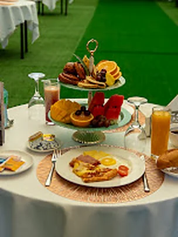
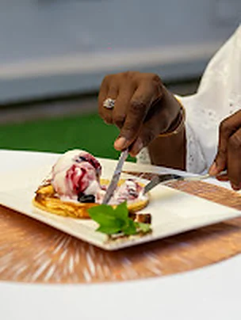

Bistronomie · Rooftop · Vue sur la Corniche
Des saveurs d'ici et d'ailleurs,
vue sur la Corniche.
Du petit-déjeuner au dîner : plats signatures, poissons et grillades à la braise, saveurs du Sénégal revisitées : thiof crémeux coco, vinaigrette au baobab, yendou de la cheffe… et des brunchs gourmands à partager sur notre rooftop.
- Rooftop & terrasse
- Livraison
- À emporter
- Wi-Fi
Bienvenue
Le Galoya
Sur la Corniche Ouest, Le Galoya vous accueille du petit-déjeuner au dîner, en passant par le déjeuner et le brunch. Accueil chaleureux, service attentif et cadre raffiné, en terrasse ou sur le rooftop, avec vue sur la Corniche.
- RooftopVue sur la Corniche Ouest
- TerrasseEn plein air
- Salle privéePour vos événements
- Plats végétaliensOptions sans viande
- LivraisonSur commande
- À emporterCommandez, passez récupérer
- Wi-FiConnexion sur place
En images
Au Galoya


Réservation
Réservez votre table
Choisissez la date, l'heure et le nombre de personnes : votre demande arrive directement sur notre WhatsApp, nous vous confirmons rapidement.
Horaires & réservations
Lundi – samedi · 11h30 – 22h30
Fermé le dimanche · horaires à confirmer avec le restaurant